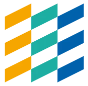

Software Engineer & Cloud Architect with nearly two decades of hands-on experience building web applications and the systems behind them, from real-time, cross-platform apps and REST APIs to the AWS infrastructure they run on. Still writing code every day, in both functional and object-oriented styles, with a bias toward systems that are simple, secure, and easy to operate.
Dustin Swan
Experience
Lead Software Developer
Major Rocket | Jan 2024 - present
AWS EC2 RDS S3 CloudFront Docker PHP Laravel MySQL JavaScript
- Build & maintain a family of Laravel & JavaScript web applications across several brands: storefronts, merchant & partner portals, and admin tools
- Design & build the core platform API behind them: product catalog, cart & checkout, inventory, and order management, integrating Shopify and payment providers
- Run production infrastructure on AWS: EC2, RDS, S3, CloudFront, & Route 53
- Maintain containerized QA & UAT environments, scripted production deploys, and AWS Lambda image-processing services
- Collaborate closely with sales, B2B teams, and designers to build products aligned with business requirements

Visionable UK Ltd
2009 - 2024
JavaScript React Vue.js Angular MobX Electron Node.js Next.js PHP PostgreSQL C++ Qt AWS Laravel
Front End & API Lead Software Engineer
- Led front- & back-end teams building an AWS SaaS API platform and a React + NextJS web application
- Worked closely with Product & Design teams to quickly turn ideas into functional prototypes
Lead Developer
- Became the primary developer through years of company change, owning the web, desktop, & API codebases
- Designed & developed our flagship responsive, cross-platform JavaScript video conferencing application
- Architected, developed & documented our REST APIs
Web Developer
- Built the first browser-based client for our video conferencing platform, years before WebRTC existed

Validation Engineer
Abbott Laboratories | 2007 - 2009
- Managed projects and assembled cross-functional teams to construct change plans and assess product impact
- Authored changes to testing documentation and product design records
- Processed changes to quality system and product documents to comply with medical device regulatory requirements
- Programmed automated testing control procedures using the Laboratory Information Management System (LIMS)